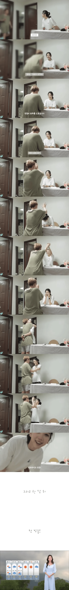
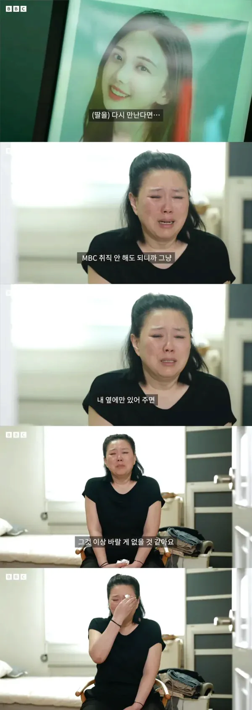
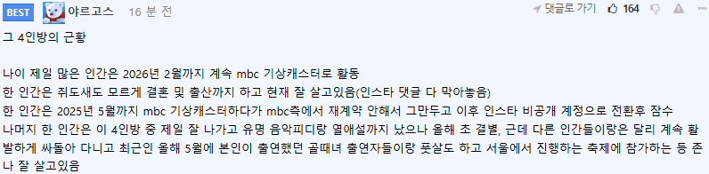

먹먹하다 저 네명은 가해자들인가 확실한거임?
직접적인 왕따 가해자 2명이랑 옹호했던 방관자 2명으로 알고있음
근데 그중 방관자 1명은 오해였나? 암튼 유가족이랑 잘 풀었던걸로 알고있음
사람들 인식이 좀 바뀌어야 할 듯
진짜 다른 사람 때문에 죽을 것 같으면 자기가 죽는게 아니라 그 사람을 죽이는걸로
옛날 맥시코 동료들이 그런말함
한국인은 괴롭히는 것들을 죽이지 않는것이 너무 착하고 안타깝다고함...
정작 그렇게 해서 죽이면 이제 새로운 지옥임
걍 죽을만큼 못살거 같으면 버티는게 아니라 그만두는게 최선이다...
아니 죽여야됨..그게 사회 전체로 이득임
나도 그런일 겪으면 수없이 고민하고 죽인다음에 죗값 달게치를거임
엥 나는 내 인생, 내 가족 뿌리 뽑은 새낀 반드시 칼찌를 하든 죽창으로 찌르든 같이 골로 갈건데. 누구 맘대로 다리 뻗고 잘라고ㅋㅋ
사적 제재 하지말라고, 사화 혼란 야기하지 말라고 법이 존재하는건데 그 법이 법이 피해자 구제 못해주는 세상은 걍 칼찌가 맞음. 근 몇 년간 사회뉴스 기사 보니까 졷같은 판결이나 술처먹고 차로 치고 한 가정 풍비박살내고도 감형 집유 뜨는거 보니까 이 나라는 이게 맞다고 판단 내림.
전세 사기 치는 새끼들도 그렇고 칼찌 당해서 뒤지든가 해야함. 피해 회복은 가만히 있는다고 누가 해주는게 아닌 피해자의 권리인데 해결 안 되면 이악물고 피를 보더라도 십새끼는 걍 칼찌가 답임. 가만히 냅두면 이런 새끼들은 또 다른 피해자만 생김.
난폭한 사상으로 보일수도 있는데 난 솔직히 깜빵에 갇힌 새끼들도 다 사형해서 처분해야 한다 생각함.
이십새끼들이 여자 감옥 다큐 보니까 비상 호출벨 눌러가면서 간수들 비서마냥 호출하고 여름에 덥다고 에어컨? 니미 씨발럼들이 걍 기름에 불 붙여 다 태워야돼
말이쉽지
비슷한 생각 한적 있음.
자식 생기고나서 괴롭힘으로 자살한 학생 뉴스 같은거 보면..
내 아들이 당해서 죽으면 가해자 사지 자르고 불태워서 병신 만들고 감옥간다고..
아 직괴로 극단적선택하신건가 안타깝네 ㅠㅠ
아 억장이 무너지는 기분이네 ... 저렇게 이쁜 자식을 먼저 보내면
내로남불 mbc ㅋㅋㅋㅋㅋㅋㅋㅋ
그 가해자년들 뭐하고살까?
MBC는 저 사건에 대해 사과문을 올릴 때조차 “MBC 흔들기 차원에서 접근하는 세력들의 준동에 대해서도 우려를 표한다.”는 문구를 대놓고 삽입하면서 사과문마저 정치적 선동의 도구로 썼지. 난 MBC 뉴스 찾아 보는 새끼들도 역겨워
난 유튜브 MBC 차단해놓음
지구최악의 병신언론사
하아...진짜... 우리나라는 가해자에 대한 처벌은 너무 약함
인생의 경험정도로 생각할듯, 술한잔 하면서 피해자 뒷담 아직도 까면서 잘 살겠지

만나면 안좋은 친구
자살문화가 바뀌어야해. 나를 힘들게하는놈들을 먼저 죽이고 자살하는걸로 문화가 바껴야함.
마녀사냥 조지게 해줄텐데 유서에 진범 누군지좀 이름석자 쓰고가라
첫 사진 봤을 때 '아.. 안돼' 했었는데 ㅠㅠ
난 1도 모르고 몽글몽글한 마음으로 보다가 '딸을 다시만나면..' 여기 보는 순간 'MBC이 씨발새끼들...'
준동세력
아 시발 설마하면서 내렸는데 ㅠㅠ